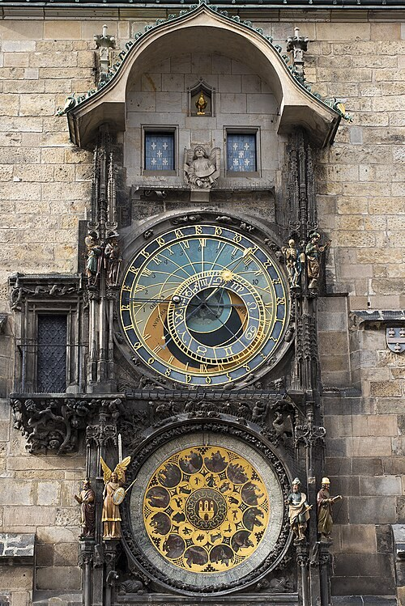

Orloj és Óvárosháza (Pražský orloj a Staroměstská radnice)
Az Orloj előtt ne csak az apostolok megjelenését várjuk. A csillagászati óra jóval összetettebb annál, mint amit a néhány perces látványosság elsőre megmutat. Az Óvárosháza déli falán idő, égbolt és naptár kapcsolódik össze. A szerkezet a középkori város tudását és önbizalmát is láthatóvá tette.
Az óra legrégebbi része 1410-ből származik. Készítéséhez Mikuláš z Kadaně órásmester és Jan Šindel csillagász neve kapcsolódik. A későbbi korszakok újabb részletekkel és javításokkal alakították a szerkezetet. A ma látható együttes ezért több évszázad közös munkáját őrzi.
A felső csillagászati számlap a Nap és a Hold helyzetét, valamint különböző időszámításokat jelenít meg. A középkori világszemléletben a városi idő és az égi rend nem vált el élesen egymástól. Nézzük meg a számlap körüli gyűrűket, mielőtt megpróbálnánk mindent egyszerre leolvasni. Már az eltérő jelrendszerek felismerése is sokat hozzáad az élményhez.
Az alsó naptártárcsa Josef Mánes tizenkilencedik századi munkájához kapcsolódik. A hónapképek az évszakokat és a mindennapi munkát is felidézik. Az idő így nem pusztán számsorként, hanem az emberi élet ismétlődő rendjeként jelenik meg. A két nagy tárcsa egymást kiegészítve adja az óra különleges karakterét.
Az óránkénti játék során a Halál figurája és az apostolok mozgása vonzza magára a figyelmet. A figurák a mulandóság, az emberi hiúság és a vallásos remény képeit kapcsolják össze. A játék nem egész éjjel látható, a bemutatásnak napi időrendje van. Érdemes a várakozás közben a mozdulatlan szobrokat és faragványokat is megfigyelni.
A megvakított órásmesterről szóló ismert történet legenda, nem az óra dokumentált keletkezéstörténete. A valós múltban restaurálások és a második világháború végi súlyos károk is fontos szerepet játszottak. A városháza tornya és történelmi terei külön látogatási élményt adnak a külső órához képest. Ha innen továbbmegyünk, már érdemes úgy emlékezni az Orlojra, mint egy működő képes világmagyarázatra, nem csupán néhány mozgó figurára.
50.087008, 14.420917